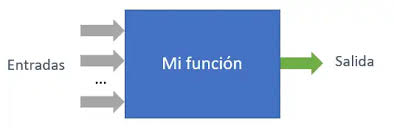

Secuencia bien definida, finita y ordenada de pasos que, al seguirse, permite resolver un problema o realizar una tarea específica en un tiempo razonable.

Secuencia bien definida, finita y ordenada de pasos que, al seguirse, permite resolver un problema o realizar una tarea específica en un tiempo razonable.
Representaciones simbólicas de información, como números, caracteres o valores, que sirven como insumos para cálculos, análisis o procesamiento computacional.
Estudio y aplicación de principios y reglas formales para razonar, deducir y tomar decisiones en el diseño y análisis de algoritmos.
Proceso de diseñar y escribir código en lenguajes de programación para desarrollar aplicaciones, sistemas o resolver problemas computacionales.

Situación que requiere una solución, generalmente formulada en términos de objetivos y restricciones que deben satisfacerse.
Conjunto interrelacionado de elementos o componentes que trabajan juntos para cumplir una función o alcanzar un objetivo.
Entidad que actúa como un contenedor para almacenar valores que pueden cambiar durante la ejecución de un programa.
Subprograma o bloque de código independiente diseñado para realizar una tarea específica, generalmente tomando entradas (parámetros) y devolviendo un resultado.

Modelo o formato específico para organizar, administrar y almacenar datos de manera que sean eficientes para su uso en algoritmos y programas (ejemplo: listas, pilas, colas).
Es una estructura de control en programación que permite ejecutar un bloque de código de manera repetitiva mientras se cumpla una condición específica o durante un número determinado de iteraciones. Los bucles son fundamentales para manejar tareas repetitivas de forma eficiente en un programa.
Técnica algorítmica utilizada para reordenar elementos de un conjunto de datos en una secuencia predeterminada, como orden ascendente o descendente.
Configuración repetitiva en datos, procesos o diseños que puede identificarse y aprovecharse para predicción, optimización o diseño.